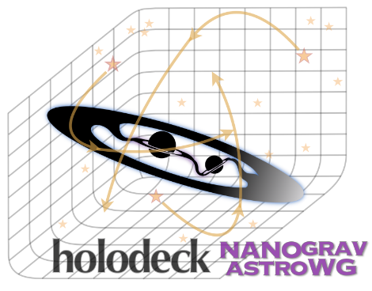

Detecting Gravitational Waves with Pulsar Timing Arrays
I am an associate member of the North American Nanohertz Observatory for Gravitational Waves (NANOGrav). NANOGrav is one of several pulsar timing arrays (PTAs) across the globe that use correlations in the time delays of precisely timed pulsar signals to detect the squeezing and stretching of spacetime due to gravitational waves (GWs). In the 15-year data set, NANOGrav found strong evidence for the stochastic gravitational wave background (GWB) (NG15 GWB paper ).
Simulating GWs with holodeck
holodeck is a python package that synthesizes semi-analytic populations of SMBHBs, evolves them in time and separation to the PTA-regime of frequencies, and simulates the GWs they produce, developed by Luke Z. Kelley, with contributions from myself and other members of the NANOGrav Astrophysics Working Group. Using holodeck, we demonstrated that the GWB measured in the 15-year NG data can be reproduced by a population of SMBHBs (NG15 SMBHB paper).
Continuous Waves from Single Sources
I developed a holodeck feature to extract N loudest single sources from the background, at each frequency.
Below is a gw-sky
visualization of the 10 loudest single sources at each frequency of a single holodeck realization.
 By modeling individual sources, we can make predictions for continuous wave (CW) detections and GWB anisotropy.
By modeling individual sources, we can make predictions for continuous wave (CW) detections and GWB anisotropy.
Anisotropy

NG members placed upper limits on the level of anisotropy in the 15-year GWB data, which we compare to predictions I made using holodeck generated populations, placed randomly on a healPIX map (NG15 anisotropy paper).